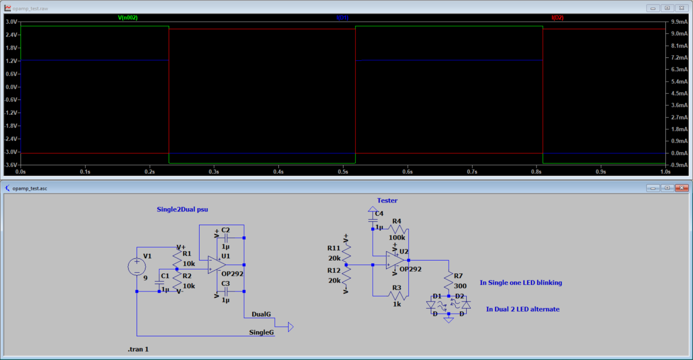
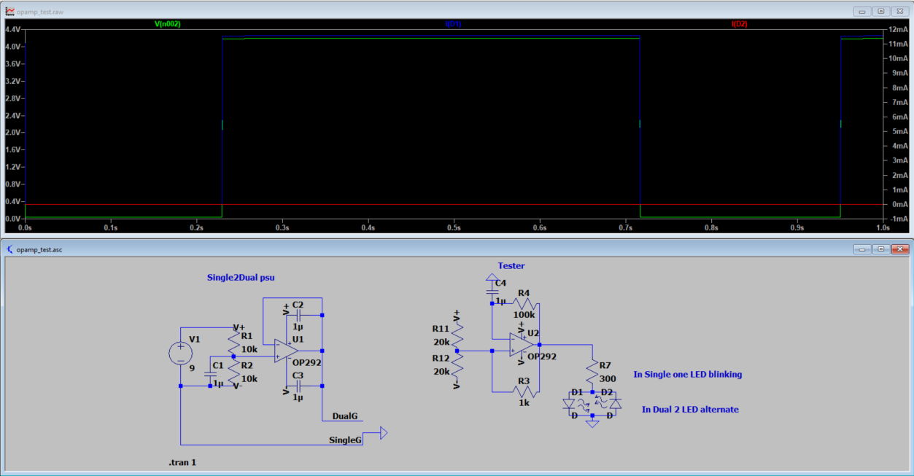
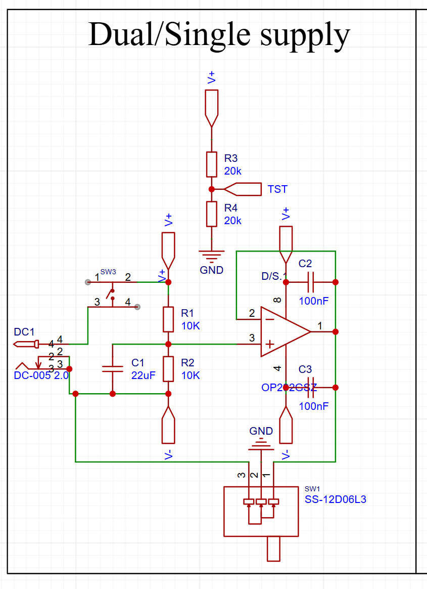
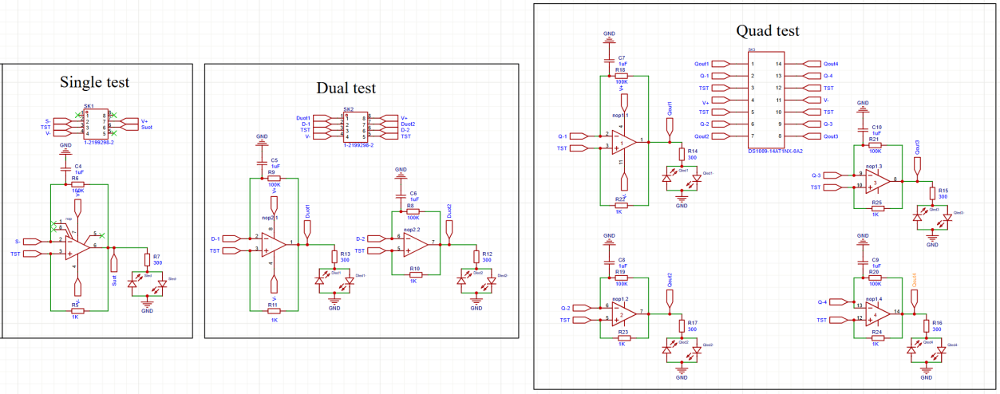

Op-Amp IC Tester
A custom PCB for quickly verifying the functionality of DIP-packaged operational amplifier ICs. Configures the device under test as a Schmitt trigger — a working op-amp produces a visible LED response. Designed in KiCad and validated with full LTSpice simulations before fabrication.
What is it?
When working with op-amp ICs — whether pulled from a parts bin or received from a supplier — there is no easy way to quickly confirm a device is functional before soldering it into a circuit. This tester board solves that problem.
Insert the IC, select the supply mode, press the test button, and the LEDs tell you instantly whether the op-amp is working. No oscilloscope, no bench power supply, no complicated setup.
Three IC sockets support 8-pin (single/dual) and 14-pin (quad) DIP packages.
A slide switch selects between 0V/+9V (single) and ±4.5V (dual) supply rails.
Reverse-polarity LED pairs show both positive and negative output swing at a glance.
A momentary button on the board corner powers the test — no accidental activation.
Schmitt Trigger as a Test Method
The test principle is straightforward: when an op-amp is connected as a Schmitt trigger (a positive-feedback comparator), it should self-oscillate and produce a square wave output. Resistors and a capacitor on the board set the oscillation frequency. The output is then fed into a pair of antiparallel LEDs.
If the op-amp is working correctly, it will rail-to-rail switch continuously — one LED fires on the positive half-cycle, the other on the negative half-cycle, resulting in visible flashing.
0V / +9V
The op-amp output swings between 0V and +9V. Only the positive-polarity LED flashes — the reverse-polarity LED cannot conduct without a negative rail. A working IC will show a single blinking LED.
−4.5V / +4.5V
The supply voltage is split symmetrically around ground. The output swings positive and negative, so both LEDs in each pair flash alternately — a clear visual indication of full rail-to-rail operation.
How to Use
- 1 Insert the op-amp IC into the correct socket (8-pin or 14-pin).
- 2 Set the slide switch to the desired supply mode.
- 3 Press and hold the
TESTbutton on the board corner. - 4 Observe the LEDs — flashing as expected means the IC is good.
LTSpice Verification
Before laying out the PCB, the full circuit was simulated in LTSpice to verify oscillation frequency, LED current levels, and correct behaviour in both supply modes. The simulation confirmed square-wave output and safe LED drive currents across both configurations.


Circuit Design
The board is divided into two main circuit blocks: the power supply section and the Schmitt trigger test section. Both were captured in KiCad.


What's Next
V1 validated the core concept. The following improvements are planned for V2:
-
◆
SMD component testing
Add test pads and adapters to support SOIC/SOT packaged op-amps, not just DIP.
-
◆
Flexible power input
Accept a 9V DC barrel jack, a 9V battery, or USB-C (via an on-board 5V → 9V DC-DC boost converter), with an overvoltage protection circuit clamping higher inputs to 9V.
-
◆
Crosstalk fix
Improved ground plane and decoupling to eliminate the inter-channel crosstalk observed in V1.